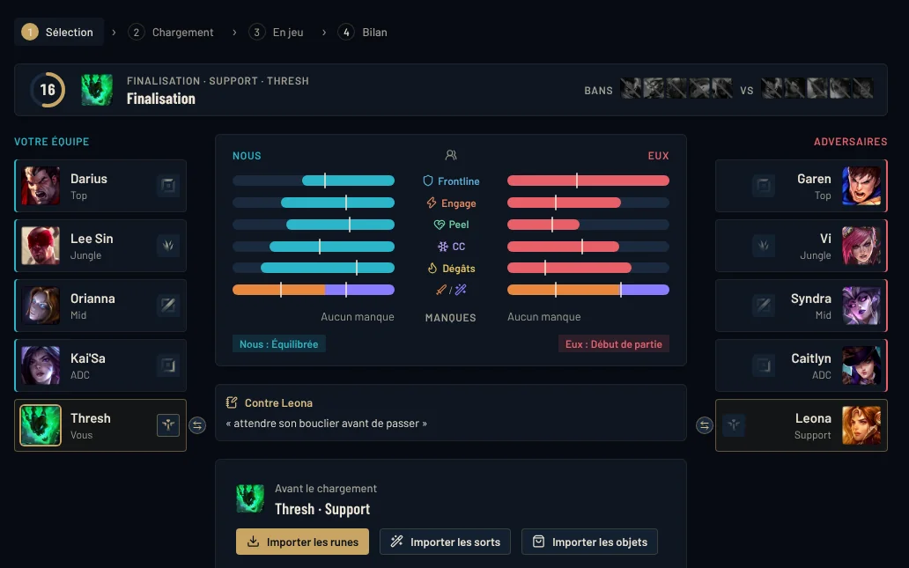
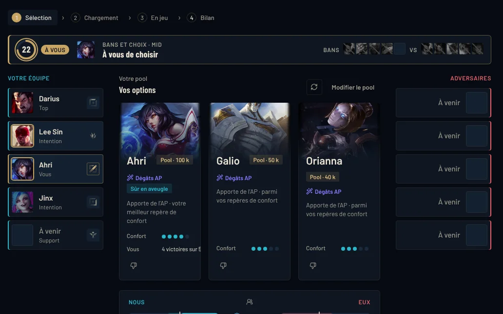
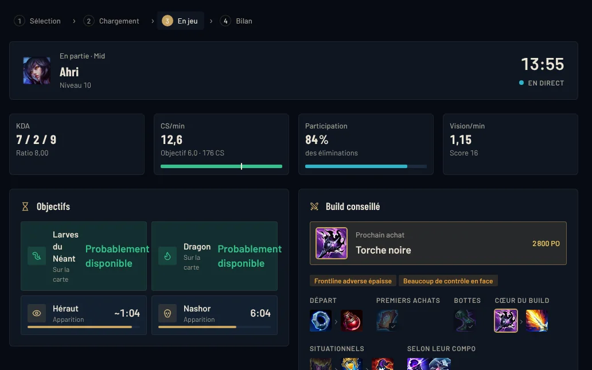
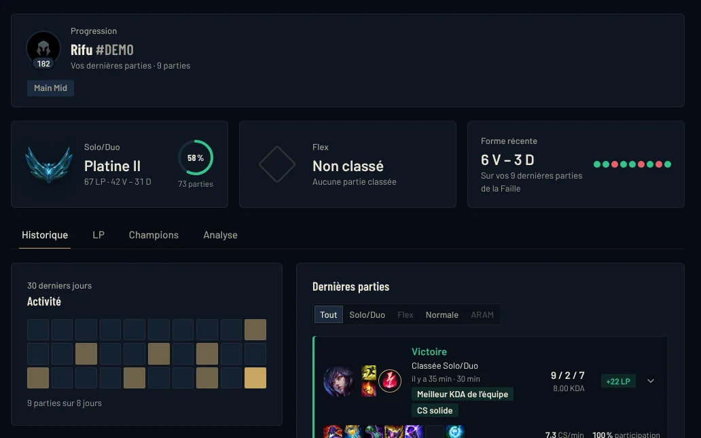

Après le verrouillage
Runes, sorts et objets en un clic
Page de runes, sorts (Flash sur la bonne touche), ordre des compétences et set d'objets dans la boutique du jeu. Vos propres sets sont conservés.
RIFU est un compagnon pour League of Legends. En sélection des champions, il lit la draft, repère ce qui manque à votre compo et vous propose trois options de votre pool, chacune avec sa raison. Puis il vous suit au chargement, en partie et au bilan.

Sélection des champions
En solo queue, personne ne vous aide à réfléchir à la compo. RIFU le fait pendant que vous choisissez, à partir des champions que vous jouez vraiment.
Picks alliés et adversaires, bans, rôles et votre tour, directement depuis le client League.
Votre compo est analysée sur six axes, comparée à celle d'en face.
Prises dans votre pool, pour votre rôle, avec la raison écrite en une ligne : ce qu'elles apportent, le matchup, votre confort.
Toute la partie
RIFU s'ouvre tout seul au bon moment et se fait discret le reste du temps.

Après le verrouillage
Page de runes, sorts (Flash sur la bonne touche), ordre des compétences et set d'objets dans la boutique du jeu. Vos propres sets sont conservés.

Écran de chargement
Rang, forme récente, résultats sur le champion joué, groupes en duo ou en trio, et le diagnostic des deux compos. Par-dessus le chargement de League.

En partie
Panneau Ctrl + X, écarts d'équipement en maintenant TAB, minuteurs des objectifs, et un build qui s'adapte à la compo adverse sans affaiblir votre champion.

Après la partie
LP gagnés ou perdus, écarts d'or et d'XP, CS à 10 et 15 minutes, morts placées sur la carte et jusqu'à trois moments à revoir.

Entre deux parties
Courbe des LP, dernières parties, objectif du moment choisi par vous, et ce que le nouveau patch change pour vos champions.

Quand vous voulez
Build, runes et matchups de n'importe quel champion, tier list par rôle, simulateur de draft, et la recherche de n'importe quel joueur EUW.
Nos règles
RIFU ne lit jamais la mémoire du jeu et ne modifie aucun fichier de League.
Jamais « jouez X ». Les suggestions viennent de votre pool, pas d'une méta unique.
Aucune estimation de MMR, aucun joueur masqué identifié, aucun suivi des sorts adverses.
Historique, notes et réglages restent sur votre PC. Retours et statistiques d'usage : seulement si vous l'activez.
Installer
RIFU-Setup-….exe, sur cette page ou sur la page des versions.Questions
Oui, entièrement. À terme, RIFU sera financé par de la publicité discrète, uniquement dans la fenêtre RIFU et hors partie : jamais en sélection, au chargement, en jeu ni dans un overlay.
RIFU n'utilise que les interfaces que Riot met à disposition des applications tierces : l'API Riot, l'API du client League et les données de la partie en cours. Il ne lit jamais la mémoire du jeu, ne modifie aucun fichier de League et ne joue jamais à votre place.
Il suit les règles de Riot pour les applications tierces : plusieurs options plutôt qu'un choix imposé, pas d'estimation de MMR, pas d'identification des joueurs masqués en sélection, pas d'information absente du client qui donnerait un avantage.
La bêta est fermée et se fait sur invitation, avec un code personnel par joueur. Rejoignez le Discord RIFU pour demander une place.
Pendant la bêta, l'installeur n'est pas encore signé par un certificat, donc Windows SmartScreen le signale. La signature est prévue pour la sortie publique. En attendant, téléchargez RIFU uniquement depuis ce site ou la page officielle des versions.
Non. RIFU est une application autonome : elle n'a pas besoin du client Overwolf.
Les conseils fonctionnent sur la Faille de l'invocateur : normales, classées, Coop contre IA et parties personnalisées. En ARAM et en Arena, RIFU l'indique et ne donne pas de conseil.
EUW pour l'instant : les profils, le chargement et les statistiques s'appuient sur les parties de ce serveur. D'autres serveurs viendront plus tard.
Pas pour l'instant : RIFU est réservé à Windows 10 et 11.
RIFU télécharge les nouvelles versions en arrière-plan, jamais pendant une partie. Quand « Redémarrer pour mettre à jour » apparaît, cliquez dessus entre deux parties.
Depuis Paramètres Windows › Applications › Applications installées, comme n'importe quelle application.
Le minimum pour afficher les profils et l'écran de chargement. Tout le reste reste sur votre PC, et les retours ne partent que si vous l'activez. Le détail est dans la politique de confidentialité.
Gratuit, pour Windows. Un code bêta est nécessaire pendant la bêta fermée.